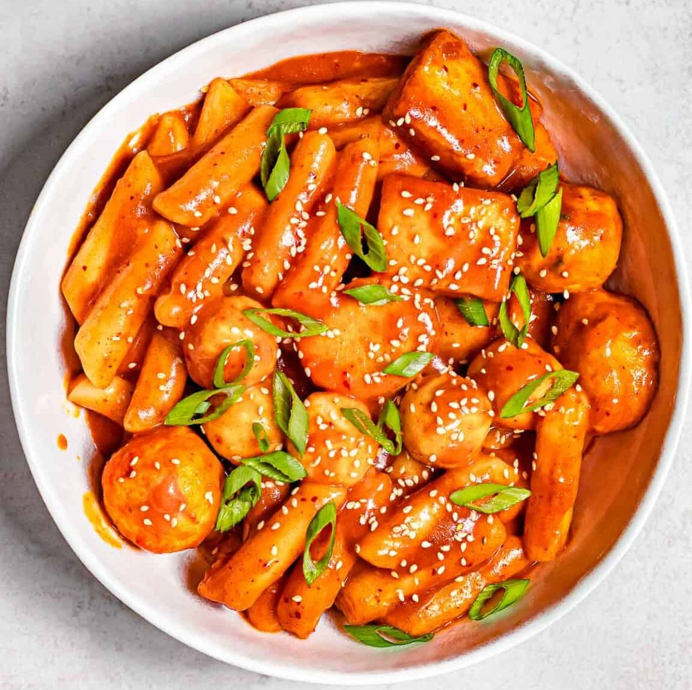

back to recipe list
Tteokbokki

Description
Tteokbokki, aka spicy Korean ricecakes, is a popular Korean dish made of two main
korean ingredients called gochujang (red pepper paste) and garae-tteok (rice cake
cut into cylindrical shapes).
There are many variations to making tteokbokki with different sauces or additional
ingredients to choose from. Also the authentic recipe calls for no measurements and
it's totally not because I'm too lazy to find one with numbers.
Ingredients
- sugar
- soy sauce
- minced garlic
- gochugaru (Korean red pepper powder)
- gochujang (Korean red pepper paste)
- anchovy stock
- sesame oil
- sesame seeds
- rice cakes
- fish cakes
- veggies
- scallions
- ramen (optional)
- eggs (optional)
- love (optional)
- dumplings (optional)
Steps
- Mix the gochujang, gochugaru, soy sauce, garlic, and sugar in a small bowl
- Add anchovy stock and water to a large, deep pan and bring to a boil
- Once boiling, remove stock packet and add the sauce paste from bowl
- Add the rick cakes, fish cakes, and veggies to cook for 5-7 minutes until soft
- As the sauce reduces and thickens, add other optional ingredients
- Finish by adding sesame oil, sesame seeds, and scallions
back to top